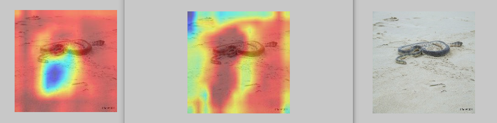

8. 评测完整实例¶
8.1. 参考实例1（白盒攻击）¶
参数设置¶
testimport.py中parser设置：
( attack_method=["FGSM"],
evaluation_method='ACTC',
Data_path=["../Datasets/ImageNet/images/","../Datasets/ImageNet/val_4.txt","../Datasets/ImageNet/images/","../Datasets/ImageNet/val_4.txt"],
Dict_path="./dict_lists/ImageNet_12_dict.txt",
model_dir=' ',
model='torchvision.models.vgg19',
defense_model=' ',
model_defence_dir=' ',
data_type='ImageNet',
IS_WHITE=True,
IS_PYTHORCH_WHITE=False,
black_Result_dir=' ',
IS_SAVE=True,
IS_COMPARE_MODEL=False,
Scale_ImageSize=(375,500),
Crop_ImageSize=(375,500),
IS_TARGETTED=False,
save_path='ImageNet_Attack_generation/'，
batch_size=64,
CAM_layer=28,
GPU_Config=["1","0"],
save_method='ImageNet'
save_visualization_base_path="./temp/"
)
输出存储¶
项目会默认生成对应名称的结果位置如下：
AISafety
├── EvalBox
├── Models
├── utils
├── test
│ ├── testimport.py
│ ├── testimport_black.py
│ ├── ImageNet_Attack_generation
│ │ ├── attack_param_FGSM_fgsm_01
│ │ ├── attack_param_FGSM_fgsm_02 # 对应于攻击算法参数
│ │ │ ├── Image
│ │ │ │ ├── Adv_Images # 存储对抗样本
│ │ │ │ │ ├── Adv_ILSVRC2012_val_00000001.JPEG
│ │ │ │ │ ├── Adv_ILSVRC2012_val_00000002.JPEG
│ │ │ │ │ ├── Adv_....JPEG
│ │ │ │ ├── adv_preds_val_4.txt
│ ├── temp
│ │ ├── **result.txt** # 用于存储评测结果
├── Datasets
评测结果¶
result.txt中存储的评测计算结果形如：
{
"table_list": {
"FGSM": {
"fgsm_01": [["ACAC", "ACC", "ACAC", "ACTC"], [0.8877955079078674, 0.9, 0.26380638033151627, 0.025149270360998344]],
"fgsm_02": [["ACAC", "ACC", "ACAC", "ACTC"], [0.8242363157095732, 0.9, 0.23616972751915455, 0.014533321653289022]]
}
}
}
这里是使用Json格式的存储。格式说明如下：
第一个字典关键字是FGSM，表示攻击的方法，第二个是fgsm_01，表示配置的参数文件对应的名称，“ACAC”, “ACC”等表示的是评测函数的选取，后面顺序相同的对应的是该方法的评测值
“0.8877955079078674, 0.9”,这里设置的评测方法是“ACTC”，对应的就是最后一个值0.025149270360998344
攻击后样本¶
攻击后样本，如果选择的保存样本方式为
save_method='ImageNet'
而非
save_method='.npy'
则对抗样本将以图像形式，存储在先前设置的“Adv_Images”中
攻击前后热力图敏感区域可视化¶
模型评测的同时，将生成模型关注度的热力图，并将按照
原始图像，OriginSample_模型名_orig_图像序号.jpg
攻击图像，AttackSample_模型名_orig_图像序号.jpg
原始图像热力图，OriginSample_模型名_cam_图像序号.jpg
攻击图像热力图，AttackSample_模型名_cam_图像序号.jpg
的形式，一张输入样本，对应输出四张可视化图像。
目前的热力图方法只支持grad_cam的方式，指定显示模型的某一层到图像上，默认结果和热力图设置和保存成224X224的，可以供用户作为可解释性分析的一种方式。

8.2. 参考示例2（黑盒攻击）¶
参数设置¶
testimport_black.py中parser设置，arg1的：
(
attack_method=["FGSM"],
Data_path=
["../Datasets/CIFAR_cln_data/cifar10_30_origin_inputs.npy", "../Datasets/CIFAR_cln_data/cifar10_30_target_labels.npy",
"../Datasets/CIFAR_cln_data/cifar10_30_origin_inputs.npy", "../Datasets/CIFAR_cln_data/cifar10_30_origin_labels.npy"],
Dict_path="./dict_lists/cifar10_dict.txt",
model_dir='../Models/weights/FP_ResNet20.th',
model='Models.UserModel.FP_resnet',
defense_model='Models.UserModel.ResNet2',
model_defence_dir='../Models/weights/resnet20_cifar.pt',
IS_COMPARE_MODEL=True,
IS_TARGETTED=True,
data_type='cifar10',
IS_WHITE=True,
IS_PYTHORCH_WHITE=False,
IS_DOCKER_BLACK=True,
ONLY_GENRATE_BLACK_SAMPLE=False,
IS_SAVE=False,
black_Result_dir="../Datasets/adv_data/zjx.json",
Scale_ImageSize=(32,32), (高，宽）
Crop_ImageSize=(32,32),(高，宽）
batch_size=64,
save_path='./Attack_generation/'，
GPU_Config=["1","0"],
save_method='.npy'
)
testimport_black.py的parser设置，arg2的：
data_type='cifar10',
evaluation_method='CCV',
IS_COMPARE_MODEL=True,
IS_TARGETTED=True,
IS_PYTHORCH_WHITE=False,
CAM_layer=12
save_visualization_base_path="./temp/"
)
输出存储¶
项目会默认生成对应名称的结果位置如下：
AISafety
├── EvalBox
├── Models
├── utils
├── test
│ ├── temp
│ │ ├── FGSM
│ │ │ ├── fgsm_01
│ │ │ │ ├── topk
│ │ │ │ │ ├── top_3_0_FGSM_ Models.UserModel.FP_resnet_cifar10.jpg
│ │ │ │ │ ├── top_3_1_FGSM_ Models.UserModel.FP_resnet_cifar10.jpg
│ │ │ │ │ ├── top_3_..._FGSM_ Models.UserModel.FP_resnet_cifar10.jpg
│ │ │ │ │ ├── top_3_0_FGSM_ Models.UserModel.ResNet2_cifar10.jpg
│ │ │ │ │ ├── top_3_..._FGSM_ Models.UserModel.ResNet2_cifar10.jpg
│ │ │ │ │ ├── ....jpg
│ │ ├── result.txt
│ ├── Attack_generation
├── Datasets
评测结果¶
result.txt中存储的评测计算结果形如：
{
"table_list": {
"FGSM": {
"fgsm_01": [["ACAC", "ACC", "ACAC", "ACTC"], [0.8877955079078674, 0.9, 0.26380638033151627, 0.025149270360998344]],
"fgsm_02": [["ACAC", "ACC", "ACAC", "ACTC"], [0.8242363157095732, 0.9, 0.23616972751915455, 0.014533321653289022]]}
}
}
这里是使用Json格式的存储。格式说明如下：
第一个字典关键字是FGSM，表示攻击的方法，第二个是fgsm_01，表示配置的参数文件对应的名称，“ACAC”, “ACC”等表示的是评测函数的选取，后面顺序相同的对应的是该方法的评测值
“0.8877955079078674, 0.9”,这里设置的评测方法是“ACTC”，对应的就是最后一个值0.025149270360998344
每测评一次会在文件中按照 攻击方法–>方法配置文件名字–>测评方法–>结果值去保存
如果不想被之前的结果干扰，用户可以手动删除，只生成当前的结果即可。
攻击前后模型topk对比¶
这里topk默认是3，会默认生成对应名称的结果，表示攻击前后模型对样本预测的概率前3的分类结果的一个柱状图比较。
对应的命名方式例如： top_3_0_FGSM_Models.UserModel.FP_resnet_cifar10.jpg
表示top3在第0个样本攻击方法FGSM使用的模型文件Models.UserModel.FP_resnet在数据集cifar10的一个柱状分类前三的结果图
项目默认保存的是样本数据的前50%，用户可以通过修改 testimport.py中Save_Eval_Visualization_Result()函数的topl_show_list参数，此参数是一个列表，用户可手动赋值，也可以按照自己的需求生成要保存的数据的index列表
topk_show_list = [0,1]
topl_show_list=topk_show_list设置要保存的列表